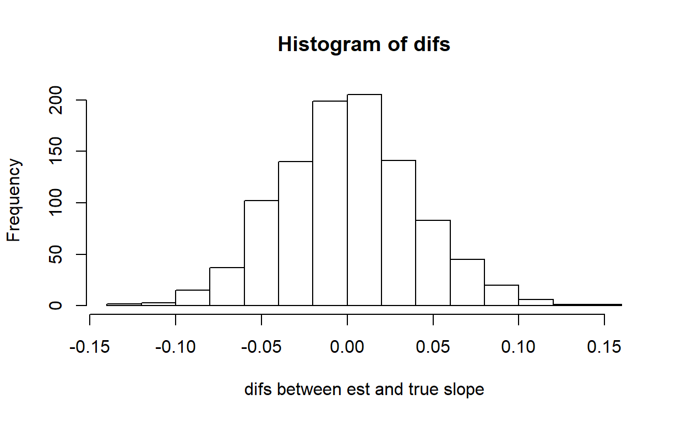

As with all lab reports, your answers will either take the form of R functions or short written responses (submitted together in a Word document). The R functions should be stored in an R script file (‘.R’ extension). To allow me to evaluate your work more efficiently, please name your R script using the following convention: "[your first name]_[your last name]_lab2.R“. So my submission would be”kevin_shoemaker_lab2.R". The name of your Word document doesn’t matter, as long as you submit via WebCampus.
Please submit the R script and the Word document via WebCampus by midnight on the due date (one week after the final lab session allocated for this topic – here, Oct. 8). You can work in groups but please submit the materials individually.
When writing functions, it’s often easiest to start off by writing a script, and then when you have everything working properly, wrap the script into a function. But don’t forget to test your function!
Please comment your code thoroughly. Don’t be afraid of for loops and inefficient coding practices… And of course be dangerous!
If you haven’t already, please list your final project information (project title, group members etc.) on our shared Google sheets document
First, review the basic approach to simulating data in the “Virtual Ecologist” lecture. Recall that a data simulation model can be constructed as a deterministic component (defining underlying relationships between the process of interest and a set of covariates), with a stochastic component wrapped around it (defining the “noise”, or “error” associated with each observation from the process of interest).
Simulate data that meet the standard assumptions of univariate linear regression (homoskedasticity, Gaussian/independent residual errors). Then run the “lm()” function on your simulated data and examine how closely the parameter estimates match the “true” parameter value.
Write a function called “LMDataSim()” for drawing a set of random observations from a defined data generating model that meets all the assumptions of ordinary linear regression. This function should be specified as follows:
Test your function- for example, using the following code:
LMDataSim(sample.size=10,xlimits=c(40,120),coefs=c(55,-0.09),stdev=6.8)Include your function in your submitted r script!
You can use this “sandbox” (below) to develop and test your function!
LMDataSim <- function(sample.size,xlimits,coefs,stdev){
# [add code here!]
}
LMDataSim(sample.size=20,xlimits=c(40,120),coefs=c(5,0.3),stdev=1)Hint: No hints … yet!
check_q2.1a <- function(USER_CODE){
code <- checkr::for_checkr(USER_CODE)
func_call <- checkr::line_where(code,checkr::insist(F== "LMDataSim","Use LMDataSim() function!"))
t1 <- checkr::line_where(func_call,
checkr::insist(abs(sum(coef(lm(V$y~V$x))-c(5,0.3)))<=1.3,
"Sorry, that's not correct"),
checkr::passif(TRUE, "Very nice!"))
}
check_q2.1a(USER_CODE)Write a function called “LMVerify_pt1()” for computing how well the coefficients and variance from R’s “lm()” function match the known coefficients of the model used to generate the data. This function should be specified as follows:
Test your function- for example, using the following code:
simdat <- LMDataSim(sample.size=10,xlimits=c(40,120),coefs=c(55,-0.09),stdev=6.8)
LMVerify_pt1(sim.dataset = simdat, trueparams = c(55,-0.09,6.8))## $difs
## intercept x stdev
## 16.4934025 -0.1849074 -4.5130120
##
## $inside
## [1] FALSEInclude your function in your submitted r script!
You can use this “sandbox” (below) to develop and test your function!
simdat <- LMDataSim(sample.size=1000,xlimits=c(0,10),coefs=c(0,1),stdev=1)
LMVerify_pt1 <- function(sim.dataset,trueparams,plot=TRUE){
# [add code here!]
}
LMVerify_pt1(sim.dataset = simdat, trueparams = c(0,1,1),plot=FALSE)Hint: No hints … yet!
check_q2.1b <- function(USER_CODE){
code <- checkr::for_checkr(USER_CODE)
func_call <- checkr::line_where(code,checkr::insist(F== "LMVerify_pt1","Use LMVerify_pt1() function!"))
t1 <- checkr::line_where(func_call,
checkr::insist(dplyr::near(0,sum(V[[1]]),tol=0.09), "Sorry, that's not correct"),
checkr::passif(TRUE, "Hallelujah!"))
}
check_q2.1b(USER_CODE)You can use the ‘predict’ function to compute confidence intervals and prediction intervals:
predict.lm(yourmodel, interval = c("confidence"), level = 0.95) # for confidence interval
predict.lm(yourmodel, interval = c("prediction"), level = 0.95) # for prediction intervalThe predict function allows you to predict a response (and estimate confidence intervals) for any arbitrary covariate values. To do this you need to add a “newdata” argument to the predict function. For example:
nd <- data.frame(x=seq(lb,ub,1)) # note that the predictor names need to match the predictor names in the model object!
predict.lm(yourmodel, newdata=nd, interval = c("confidence"), level = 0.95) # for confidence intervalNote that the prediction interval code may occasionally return some warnings- which you may safely ignore!
Does the 95% confidence interval around the slope estimate (estimated from simulated data with a sample size of 10) contain the “true” slope parameter value 95% of the time (a frequentist question!). In your Word document, explain how you addressed this question. Did you need more than 100 simulated data sets to answer this question?
NOTE: The previous exercise requires the use of “conditional” statements. That is, if a condition is true, do something. If the condition is false, do something else. The syntax for doing this in R is:
if(TRUE){
do something
}else{
do something else
}
Let’s say I want to determine the number of vector elements that are cleanly divisible by 3. I could write the following code:
inputvector <- c(1:100) # vector of interest
div_by_three <- 0
for(i in 1:length(inputvector)){
if(i%%3==0){ # if there is zero remainder after dividing by three
div_by_three <- div_by_three+1 # then increment the storage variable
}
}
div_by_three## [1] 33An alternative way to do this would be to do use the “which()” function. This tells you which indices in a vector correspond to “TRUE” conditions.
For example,
which(c(FALSE,TRUE,TRUE,FALSE))## [1] 2 3Using “which”, we could re-write the above code to take up just one line!
div_by_three <- length(which(inputvector%%3==0))How might your results from part 2.1 change if your data simulations DID NOT meet the assumptions of ordinary linear regression- e.g., if the variances were not homogeneous?
To test this, you are asked to write an R function to generate data that violates a basic assumption regarding the error distribution of standard linear regression. Specifically, your function should generate “heteroskedastic” data, such that the variance of the residuals depends on the magnitude of the covariate “x”. For this exercise, you’ll still need to specify a linear relationship (y=ax+b) between your response and predictor - the only difference is that the residual variance is no longer homogeneous.
Some other potential violations of standard assumtions we could also introduce into our data simulations if we wanted to:
In your Word document, please explain how biological or sampling processes could yield data that violate (1) the standard regression assumption of normally distributed residuals and (2) the standard regression assumption of independent observations. Be as brief as possible in your response!
Write a function called “LMDataSim2()” for drawing a set of random observations from a defined linear relationship that meets all the assumptions of ordinary linear regression except for homoskedasticity. This function should be specified as follows:
NOTE: make sure that your linear model for stdev does not go negative - this will return “NaN” values (not a number!).
Test your function- for example, using the following code:
test <- LMDataSim2(sample.size=35,xlimits=c(40,120),coefs=c(55,-0.09),sd_coefs=c(-0.2,0.04))
plot(test$x,test$y)Include your function in your submitted r script!
You can use this “sandbox” (below) to develop and test your function!
LMDataSim2 <- function(sample.size,xlimits,coefs,sd_coefs){
# [add code here!]
}
LMDataSim2(sample.size=1000,xlimits=c(0,10),coefs=c(0,0.5),sd_coefs=c(0,0.2))Hint: No hints … yet!
check_q2.2b <- function(USER_CODE){
code <- checkr::for_checkr(USER_CODE)
func_call <- checkr::line_where(code,checkr::insist(F== "LMDataSim2","Use LMDataSim2() function!"))
t1 <- checkr::line_where(func_call,
checkr::insist(dplyr::near(0.16,coefficients( lm( abs(residuals( lm(V[,2]~V[,1]) ))~V[,1]) )[2],tol=0.06), "Sorry, that's not correct"),
checkr::passif(TRUE, "Hot Damn!"))
}
check_q2.2b(USER_CODE)Write a function called “LMVerify_pt2()” for computing how well the coefficients from R’s “lm()” function match the known coefficients of the model used to generate the data. This function should be specified as follows:
Test your function- for example, using the following code:
simdat <- LMDataSim2(sample.size=35,xlimits=c(40,120),coefs=c(55,-0.09),sd_coefs=c(-0.3,0.05))
LMVerify_pt2(sim.dataset = simdat, trueparams = c(55,-0.09))## $difs
## intercept x
## 3.55339807 -0.05256428
##
## $inside
## [1] TRUEInclude your function in your submitted r script!
You can use this “sandbox” (below) to develop and test your function!
simdat <- LMDataSim2(sample.size=1000,xlimits=c(0,10),coefs=c(0,0.5),sd_coefs=c(0,0.2))
LMVerify_pt2 <- function(sim.dataset,trueparams,plot=TRUE){
# [add code here!]
}
LMVerify_pt2(sim.dataset = simdat, trueparams = c(0,0.5),plot=FALSE)Hint: No hints … yet!
check_q2.2c <- function(USER_CODE){
code <- checkr::for_checkr(USER_CODE)
func_call <- checkr::line_where(code,checkr::insist(F== "LMVerify_pt2","Use LMVerify_pt2() function!"))
t1 <- checkr::line_where(func_call,
checkr::insist(dplyr::near(0,sum(V[[1]]),tol=0.075), "Sorry, that's not correct"),
checkr::passif(TRUE, "Rock and Roll!"))
}
check_q2.2c(USER_CODE)In your Word document, please answer the following questions:

## [1] 0.0003869134Here is an example of a goodness-of-fit visualization:
Review the “power analysis” section of the Virtual Ecologist lecture, and complete the following exercises. Recall that we are designing a monitoring program for a population of an at-risk species, and we want to have at least a 75% chance of detecting a decline of 25% or more over a 25 year period. Let’s assume that we are using visual counts, and that the probability of encountering each organism visually is 2% per person-day. The most recent population estimate was 1000 (assume that we know that with certainty).
Develop a function called “GetPower()” that evaluates the statistical power to detect a decline under user-specified types of monitoring designs (e.g., varying numbers of observers, intervals between successive surveys). This function should be specified as follows:
And we can test our new function using a command like this:
GetPower(survint=3) # test the new function## [1] 0.903Include your function in your submitted r script!
You can use this “sandbox” (below) to develop and test your function!
GetPower <- function(initabund=1000,nreps=1000,trend=-0.03,years=25,days=3,observers=1,survint=2,alpha=0.05){
# [add code here!]
}
GetPower(initabund=1000,nreps=1000,trend=-0.03,years=25,days=1,observers=1,survint=2,alpha=0.1)Hint: No hints … yet!
check_q2.3a <- function(USER_CODE){
code <- checkr::for_checkr(USER_CODE)
func_call <- checkr::line_where(code,checkr::insist(F== "GetPower","Use GetPower() function!"))
t1 <- checkr::line_where(func_call,
checkr::insist(dplyr::near(0.84,sum(V),tol=0.07), "Sorry, that's not correct"),
checkr::passif(TRUE, "Wunderbar!"))
}
check_q2.3a(USER_CODE)For each variable element of the survey design (survey interval, number of observers, days per survey bout), evaluate how statistical power changes across a range of plausible values. Plot out these relationships. In your Word document, provide ONE of these plots, describe (briefly!) how you produced the plot, and how this information might help managers to develop effective survey protocols for this species.
Let’s factor in dollar amounts. Let’s assume each observer is paid $200 per day. In addition, let’s assume that the site is fairly remote and it costs $2000 to mount a field expedition (regardless of the number of field technicians). Can you identify a survey strategy to minimize cost while meeting the objective??? What is the optimal survey design in your opinion? Briefly describe how you arrived at this conclusion. [NOTE: don’t overthink this one- you don’t need to find the true optimal solution, just find a solution that meets the objective at relatively low cost and justify your answer!]